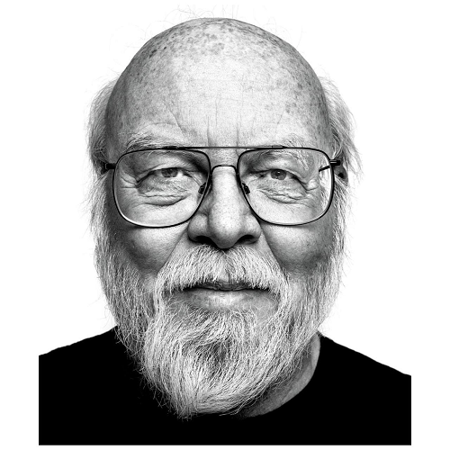

James Gosling é um progrmador canadense, mais conhecido como pai da linguagem de programação java. Em 1977, James Gosling se formou bacharel em ciência da computação pela universidade de calgary, e em 1983 obteve um PHD em ciência da computação pela universidade Carnegie Mellon.
Carreira e contribuições
Gosling esteve na Sun Microsystems entre 1984 e 2010 (26 anos). Na Sun, ele inventou um antigo sistema de janelas Unix chamado NeWS , que se tornou uma alternativa menos usada ao ainda usado X Window , porque a Sun não lhe deu uma licença de código aberto. [ citação necessária ]
Ele é conhecido como o pai da linguagem de programação Java . Ele teve a ideia para o Java VM enquanto escrevia um programa para portar software de um PERQ traduzindo Perq Q-Code para o montador VAX e emulando o hardware. Ele é geralmente creditado por ter inventado a linguagem de programação Java em 1994. Ele criou o projeto original de Java e implementou o compilador e a máquina virtual originais da linguagem . Gosling traça as origens da abordagem para seus primeiros dias de estudante de pós-graduação, quando ele criou uma máquina virtual de p-code para o laboratóriocomputador DEC VAX , para que seu professor pudesse executar programas escritos em UCSD Pascal . No trabalho que levou ao Java na Sun, ele viu que a execução de arquitetura neutra para programas amplamente distribuídos poderia ser alcançada implementando uma filosofia semelhante: sempre programar para a mesma máquina virtual. [15] Outra contribuição de Gosling foi co-escrever o programa " pacote ", conhecido como "shar", um utilitário detalhadamente detalhado no livro de Brian Kernighan e Rob Pike , The Unix Programming Environment . Ele deixou a Sun Microsystems em 2 de abril de 2010, depois que ela foi adquirida pela Oracle Corporation , citando reduções no pagamento, status e capacidade de tomada de decisão, juntamente com mudança de função e desafios éticos. Desde então, ele assumiu uma postura muito crítica em relação à Oracle em entrevistas, observando que "durante as reuniões de integração entre a Sun e a Oracle, onde estávamos sendo questionados sobre a situação das patentes entre a Sun e o Google, pudemos ver os olhos do advogado da Oracle brilharem ." Ele esclareceu sua posição durante o julgamento Oracle v. Google sobre o Android: "Embora eu tenha diferenças com a Oracle, neste caso eles estão certos .[Schwartz]: ele apenas decidiu fazer uma cara feliz e tentou transformar limões em limonada, o que irritou muita gente na Sun." [18] No entanto, ele aprovou a decisão do tribunal de que as APIs não deveriam ser protegidas por direitos autorais. Em março de 2011, Gosling ingressou no Google .Seis meses depois, ele seguiu seu colega Bill Vass e se juntou a uma startup chamada Liquid Robotics . No final de 2016, a Liquid Robotics foi adquirida pela Boeing . Após a aquisição, Gosling deixou a Liquid Robotics para trabalhar na Amazon Web Services como Distinguished Engineer em maio de 2017. Ele é consultor da empresa Scala Lightbend , Diretor Independente da Jelastic , e Consultor Estratégico para Eucalyptus , e é membro do conselho da DIRTT Environmental Solutions. Ele tem uma foto emoldurada dos primeiros 1.000 dígitos de √ 2 em seu escritório.Prêmios
Por sua conquista, a Academia Nacional de Engenharia dos Estados Unidos o elegeu como membro Associado Estrangeiro.
2002: premiado com o The Economist Innovation Award.
2002: premiado com o The Flame Award USENIX Lifetime Achievement Award.
2007: feito Oficial da Ordem do Canadá . A Ordem é a segunda maior honra civil do Canadá. Oficiais são o segundo grau mais alto dentro da Ordem.
2013: tornou-se membro da Association for Computing Machinery .
2015: premiado com a Medalha IEEE John von Neumann
2019: nomeado um Computer History Museum Fellow pela concepção, design e implementação da linguagem de programação Java .
Livros
Ken Arnold , James Gosling, David Holmes, The Java Programming Language, Quarta Edição , Addison-Wesley Professional, 2005, ISBN 0-321-34980-6
James Gosling, Bill Joy , Guy L. Steele Jr. , Gilad Bracha , The Java Language Specification, Terceira Edição , Addison-Wesley Professional, 2005, ISBN 0-321-24678-0
Ken Arnold, James Gosling, David Holmes, The Java Programming Language, Terceira Edição , Addison-Wesley Professional, 2000, ISBN 0-201-70433-1
James Gosling, Bill Joy, Guy L. Steele Jr., Gilad Bracha, The Java Language Specification, Segunda Edição , Addison-Wesley, 2000, ISBN 0-201-31008-2
Gregory Bollella (Editor), Benjamin Brosgol, James Gosling, Peter Dibble, Steve Furr, David Hardin, Mark Turnbull, The Real-Time Specification for Java , Addison Wesley Longman, 2000, ISBN 0-201-70323-8
Ken Arnold, James Gosling, A linguagem de programação Java Segunda Edição , Addison-Wesley, 1997, ISBN 0-201-31006-6
Ken Arnold, James Gosling, A linguagem de programação Java , Addison-Wesley, 1996, ISBN 0-201-63455-4
James Gosling, Bill Joy, Guy L. Steele Jr., The Java Language Specification , Addison Wesley Publishing Company, 1996, ISBN 0-201-63451-1
James Gosling, Frank Yellin, The Java Team, The Java Application Programming Interface, Volume 2: Window Toolkit and Applets , Addison-Wesley, 1996, ISBN 0-201-63459-7
James Gosling, Frank Yellin, The Java Team, The Java Application Programming Interface, Volume 1: Core Packages , Addison-Wesley, 1996, ISBN 0-201-63453-8
James Gosling, Henry McGilton, The Java Language Environment: A white paper , Sun Microsystems , 1996
James Gosling, David SH Rosenthal , Michelle J. Arden, The NewWS Book: An Introduction to the Network/Extensible Window System (Sun Technical Reference Library) , Springer, 1989, ISBN 0-387-96915-2